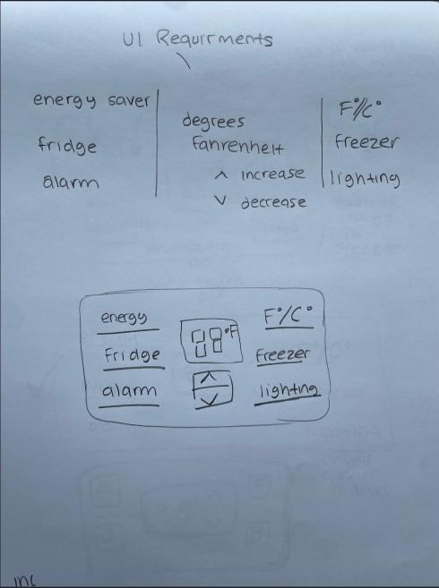
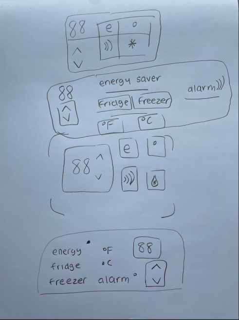
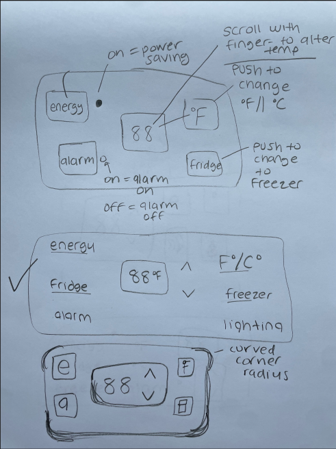
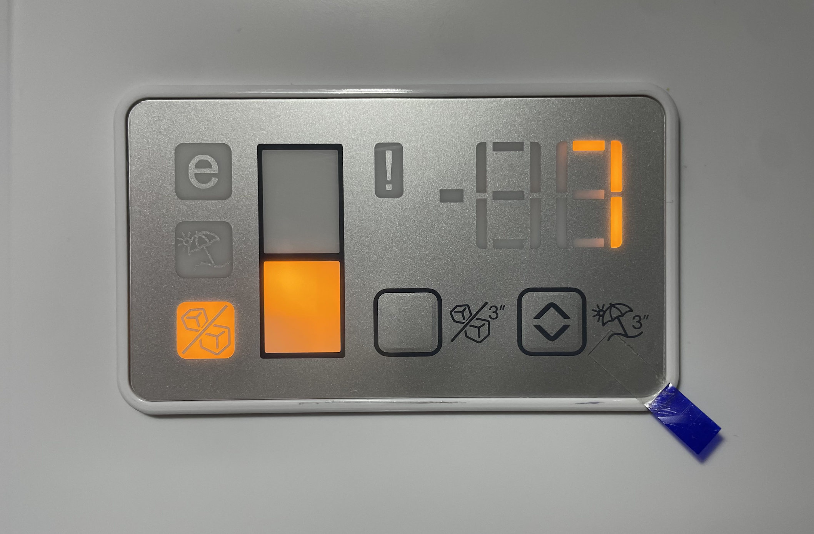
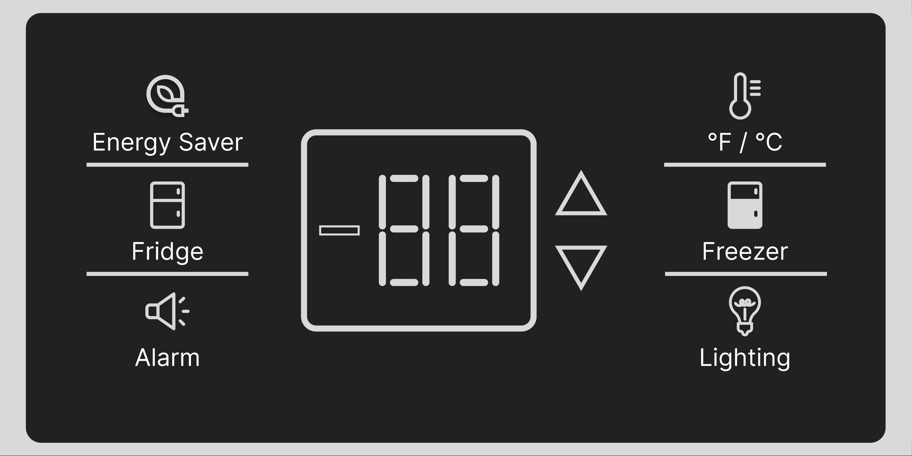
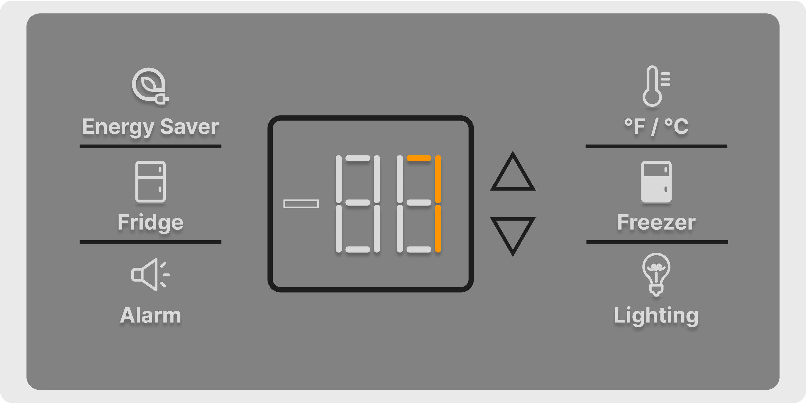

Case Study
Design Problem
Products designed for mass appeal often use minimalist designs to create simple and uncomplicated systems as a method of selling more. But when designers take this philosophy of mass appeal too far it can lead to the opposite impact. In this case, the user interface displaying controls of this refrigerator is so simplistic… it’s complicated. When the user wants to turn off the fridge alarm system there does not appear an obvious button or system to do that. With no visual cues or design signifiers, the user is dissuaded from discovering a solution.
User Persona
The ideal customer is a man named Malcolm. Malcolm is in their late 20s and is single with children. They have a masters degree and work as a freelancer. Malcolm lives in Seattle, is somewhat familiar with your product, and likes unique and handcrafted products.
Project Goals
As a single person with children, having an easy-to-use refrigerator is high on the list of important basic household items. As the earlier presented video shows, Malcom's fridge has many modern and helpful features, like an alarm to notify the user if the fridge door has been open too long. Without a proper user interface, these features become burdens rather than helpful tools.
Solution Hypothesis
The issue facing the user is that the user interface of the product is not intuitive and buttons provide no clear signifiers to their purpose. In attempting to create a minimally designed interface the design leaves out important inferences that would help the user more easily find a solution to their dilemma. This can be solved by including signifiers and clear button descriptions.
  Challenges I faced
The challenge is how to maintain the interface’s minimal design, while including relevant data points that improve users' ability to use the product and lead to positive interactions.
Solution Experiments
How my solution solves the problem
By including visual signifiers and clear descriptions for buttons, the user is more able to intuitively understand what each button's interaction will execute and why they may want to exercise those options. They engage the user to want to use the interface not dissuade them away from it.
Closing remarks
“Obvious Always Wins” – Luke Wroblewski. From a desire to create the most minimal and simple interfaces, consumers are often left confused and dissuaded from interacting with products, even when they want to. In adding clear descriptions and visual imagery this new iteration of the fridge interface effectively enables users to easily access the fridge's settings and improves their experience of the product.
